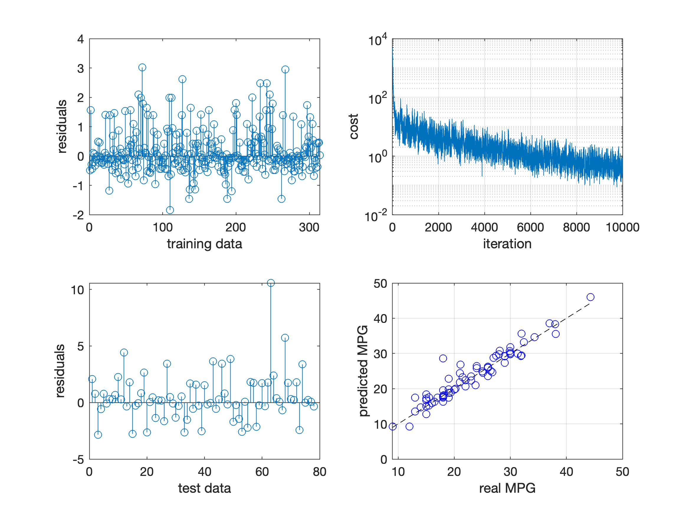

A regression example¶
This example showcases how tensorflow.m can be used for a regression problem, reproducing the steps of TensorFlow’s regression example using Keras.
Note that the code snippets are at times adapted for readability of this documentation - please refer to the the actual implementation for a working example.
Data¶
We use the auto MPG dataset from the UCI Machine Learning Repository that comprises the columns MPG, Cylinders, Displacement, Horsepower, Weight, Acceleration, Model Year and Origin. The goal is to predict the MPG value of a car given the remaining features. Let’s start by fetching the data
fname = 'auto-mpg.data';
websave(fname, 'https://archive.ics.uci.edu/ml/machine-learning-databases/auto-mpg/auto-mpg.data');
raw_data = textscan(strrep(fileread(fname),'?','NaN'), '%f %f %f %f %f %f %f %f %s', 'Delimiter','\n');
Preparation¶
As a first step, we expand the Origin column to a binary map:
map = zeros(size(raw_data{1},1),3); % 1: USA, 2: Europe, 3: Japan
for i = 1:1:size(map,1)
map(i,raw_data{8}(i)) = 1;
end
The original Origin column values are in {1,2,3}, corresponding to the areas USA, Europe and Japan. Much like the exemplary tutorial of TensorFlow, we split this numeric column into three categorical columns, encoding the origin in a binary fashion.
Cleansing¶
Looking at the values in raw_data, we find some NaN values arising from unknown features. We will simply drop those rows and proceed with the remaining data.
data = [raw_data{1:7} map]; % concatenate numeric values
data = data(~sum(isnan(data),2),:); % drop NaN values
Selection¶
Since the original data is sorted by Model Year, we will shuffle the dataset and then select an arbitrary portion as training data, while the remaining rows will be our test data.
data = data(randi(size(data,1), size(data,1), 1),:);
ntrain = 314;
ntest = size(data,1)-ntrain;
train_data = data(1:ntrain,2:end);
train_labels = data(1:ntrain,1);
test_data = data(ntrain+1:end,2:end);
test_labels = data(ntrain+1:end,1);
Again, we follow the TensorFlow tutorial and go for 314 samples of training data, leaving 78 rows of test data.
Normalization¶
To better scale our inputs we will normalize all columns w.r.t. their mean values, and divide them by their standard deviation. Since we don’t want to cheat, we need to apply the same normalization to our test data (or, any data you want to feed to the trained network).
train_data_mean = mean(train_data);
train_data_std = std(train_data);
train_data_norm = (train_data - repmat(train_data_mean,ntrain,1))./repmat(train_data_std,ntrain,1);
test_data_norm = (test_data - repmat(train_data_mean,ntest,1))./repmat(train_data_std,ntest,1);
With that, we are all set to move on to building our neural network that will be trained to solve our regression task.
Building the network¶
Now it’s time to implement our core tool - a multilayer perceptron (MLP) with two hidden layers and ReLU activations.
To keep our main script auto_mpg.m somewhat clean, we will wrap our MLP in a simple class in mlp.m.
The constructor of mlp takes two arguments: an array listing the layer dimensions (including input and output) and a scalar value for an optional Tikhonov regularization, added to the overall cost.
Early on, we create a graph and a session that we will drag along by keeping the objects as properties of the class.
function obj = mlp(layers, lambda)
% ...
g = tensorflow.Graph();
s = tensorflow.Session(g);
% ...
end
Inputs and output¶
Next, we create two placeholders - one for our inputs, and one for our output. The shape -1 indicates a size that is unknown at this time, such that we can later supply an arbitrary number of data. Since MATLAB defaults to double values, we choose for convenience to build our network for TensorFlow’s double data type - if you prefer to use single precision values, you can create placeholders for TF_SINGLE and supply values of type single().
obj.X = g.placeholder(tensorflow.DataType('TF_DOUBLE'), 'shape', [-1, layers(1)], 'name', 'X');
obj.y = g.placeholder(tensorflow.DataType('TF_DOUBLE'), 'shape', [-1, layers(end)], 'name', 'y');
Objective¶
At this point we have expressions for our predicted output obj.pred and all parameters params, such that we can define a mean squared error (MSE) objective (adding a Tikhonov regularization term):
obj.cost = g.addn([ ...
g.mean(g.squareddifference(obj.y, g.transpose(obj.pred, g.constant(int32([1; 0])))), g.constant(int32([0;1]))), ...
g.mul(lambda, g.l2loss(params)) ...
]);
We make use of a number of TensorFlow operations here, where most of them represent obvious functionality (addn, mean, squareddifference, mul, l2loss). However, the transpose operation is necessary to obtain compatible dimensions for the remaining operations - a technicality, so to speak.
Gradients¶
Having computed the cost, we can now prepare our later backpropagation by computing the gradients, using the tensorflow.Graph.addGradient() method:
for i = 1:1:numel(params)
gradient = g.addGradients(obj.cost, params(i));
obj.grad = [obj.grad; gradient];
end
And that’s all for building our network - we’re ready to proceed to find some good values for our parameters.
Training¶
For training our network we will use the RMSprop algorithm with a user-defined batch size. To write a nice wrapper for our training task, we create a mlp.fit() method that accepts seven arguments: the inputs X, the targets y, the number of epochs to run nepoch, the batch size to use batchsize, the learning rate lr and the decay values for averaging and momentum, gamma_mean and gamma_mom, respectively. As results, we will return the cost values after every batch in f, the trained weights w and the trained bias b.
function [f, w, b] = fit(obj, X, y, nepoch, batchsize, lr, gamma_mean, gamma_mom)
% ...
end
RMSprop algorithm¶
To use the RMSprop algorithm, we create an operation that we will then repeatedly run in a loop. For every parameter we create two variables - one keeping track of the mean ms, and one for the momentum mom. Making use of tensorflow.Ops.shape to obtain the respective parameter’s shape, they are initialized to zero with the tensorflow.Ops.zeroslike operation and are then fed to tensorflow.Ops.applyrmsprop together with earlier described hyperparameters and the gradient.
apply_rmsprop = [];
for i = 1:1:numel(obj.params)
shape = obj.s.run([],[],obj.g.shape(obj.params(i))).value;
ms = obj.g.variable(shape, tensorflow.DataType('TF_DOUBLE'), 'name', ['ms' num2str(i)]);
mom = obj.g.variable(shape, tensorflow.DataType('TF_DOUBLE'), 'name', ['mom' num2str(i)]);
obj.s.run([],[], [obj.g.assign(ms, obj.g.zeroslike(ms)); obj.g.assign(mom, obj.g.zeroslike(mom))]);
apply_ = obj.g.applyrmsprop(obj.params(i), ms, mom, lr, gamma_mean, gamma_mom, epsilon, obj.grad(i));
apply_rmsprop = [apply_rmsprop; apply_];
end
Preparing the training step¶
We proceed to the actual training loop - running for nepoch epochs, each with a batch size of batchsize. At the beginning of every epoch we shuffle the data and then select the required batch to apply our RMSprop for.
Two session runs are executed for every batch - a forward propagation that gives us the cost evaluated with the current parameters, and a backpropagation through running the previously built apply_rmsprop outputs together with the predicted output.
The result is an update of the parameter values according to our chosen hyperparameters, automatically stored in our graph to be used in the next batch/epoch or for prediction.
for m = 1:1:nepoch
idx = randi(ndata, ndata, 1);
X_shuffle = X(idx,:);
y_shuffle = y(idx,:);
for n = 1:1:nbatch
% ...
idx = (1:batchsize)+(n-1)*batchsize;
batch_input = [ tensorflow.Tensor(X_shuffle(idx,:)), tensorflow.Tensor(y_shuffle(idx,:)) ];
f = obj.s.run([obj.X, obj.y], batch_input, obj.cost).value();
obj.s.run([obj.X, obj.y], batch_input, [apply_rmsprop; obj.pred]);
end
% ...
end
Executing the training step¶
Having implemented our class method, we invoke the fitting task by calling it with a set of arguments that match the TensorFlow tutorial’s values (and the default values of Keras), namely 1000 epochs with a batch size of 32, a learning rate of 0.001 and decay values for RMSprop’s averaging and momentum of 0.9:
[f, w, b] = model.fit(train_data_norm, train_labels, 1000, 32, 0.001, 0.9, 0.9);
-----------------
Epoch | Loss
-----------------
1 | 1.53e+03
2 | 4.04e+02
3 | 1.56e+02
4 | 1.37e+02
5 | 1.22e+02
...
After running for a while, we can now use our model and predict the MPG for our test data.
Prediction¶
The prediction is a simple forward sweep of our trained network, which we implement as a one-liner method of our mlp class:
function yhat = predict(obj, X)
yhat = obj.s.run(obj.X, tensorflow.Tensor(X), obj.pred).value();
end
Calling this method with our test data, we obtain the predicted MPG as yhat:
yhat = model.predict(test_data_norm);
Results¶
The resulting predictions are shown in the figure below (bottom-right) - note the dashed black line, indicating the optimal result.
We also visualize the residuals of the fit (top-left) and the prediction (bottom-left), together with the evolution of the cost over run batches (top-right). While the predictions seem reasonable and are already pretty close to the actual MPG, the evolution of the cost suggests that we could still gain better fits by tuning the hyperparameters.
This, however, we will leave to you to play with ;)